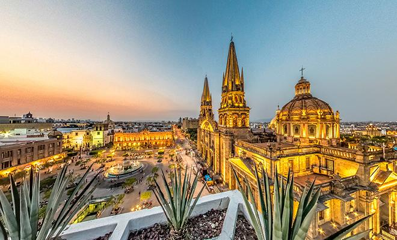
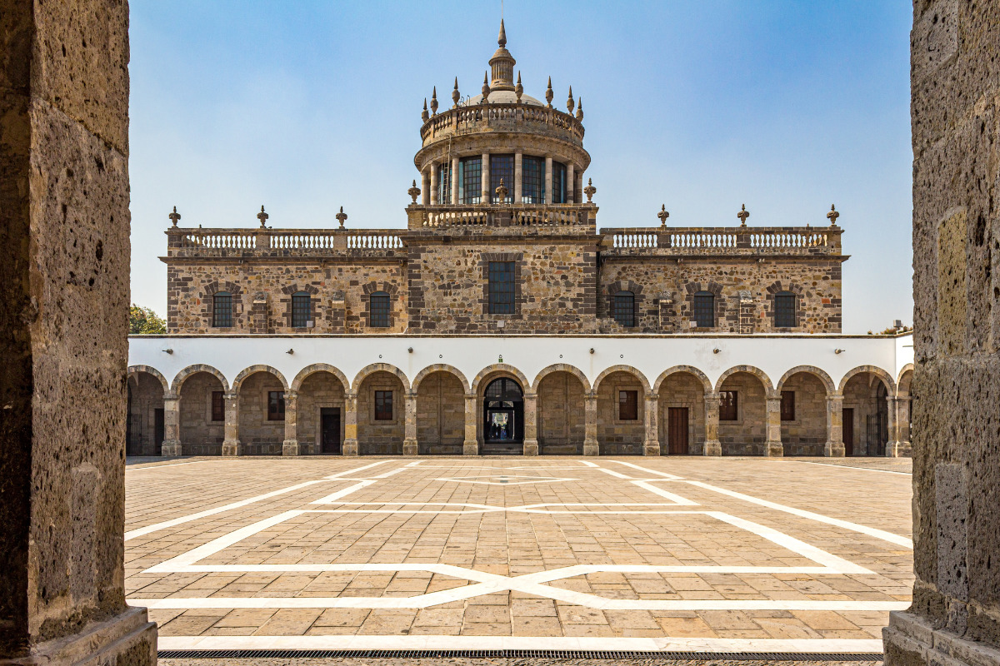

Historia de JaliscoUn recorrido por siglos de cambio, resistencia y construccion cultural |
"Un pasado lleno de cambios, luchas y tradiciones que siguen vivas"
Inicio | Historia | Cultura | Lugares Turisticos | Gastronomia | Geografia y Datos
| Navegacion rapida | ||
|---|---|---|
| Linea del tiempo | Imagenes | Ampliacion |
La historia de Jalisco es extensa y muy importante para comprender el desarrollo del occidente de Mexico. A lo largo de los siglos, este territorio ha sido escenario de la presencia de pueblos originarios, procesos de conquista, cambios politicos, crecimiento economico y transformacion cultural. Cada etapa dejo huellas visibles en la forma de vivir, organizarse y celebrar de la poblacion.
Conocer la historia de Jalisco permite entender por que muchas tradiciones siguen siendo tan fuertes en la actualidad. Tambien ayuda a reconocer que el estado no solo tiene un pasado valioso, sino que ademas ha participado de manera importante en la construccion historica de Mexico.
Antes de la llegada de los espanoles, en el territorio de Jalisco vivian diversos grupos indigenas como los cocas, los tecuexes, los caxcanes, los nahuas y los huicholes o wixaritari. Cada pueblo tenia su propia organizacion social, costumbres, creencias religiosas, formas de trabajo y relacion con el entorno natural.
Estos pueblos desarrollaron conocimientos sobre la agricultura, la artesania y la vida comunitaria. Muchas de sus tradiciones dejaron influencia en la cultura jalisciense, especialmente en las costumbres populares, en la comida, en los rituales y en la riqueza artistica de algunas regiones.
Durante el siglo XVI, los espanoles llegaron al occidente de Mexico y comenzo el proceso de conquista. Este momento historico estuvo marcado por conflictos, resistencia indigena y cambios muy profundos en la organizacion del territorio. Con la colonizacion llegaron nuevas formas de gobierno, nuevas creencias religiosas y nuevas actividades economicas.
Tambien se construyeron templos, caminos, haciendas y asentamientos que transformaron la vida regional. La influencia espanola se mezclo con las tradiciones indigenas y eso dio origen a muchas de las caracteristicas culturales que hoy distinguen a Jalisco.
En el periodo colonial, Jalisco formo parte de la Nueva Espana. En esta etapa crecieron las ciudades, el comercio y la actividad agricola. Se formaron rutas economicas y aumento la construccion de edificios religiosos y civiles que todavia hoy son parte del patrimonio historico del estado.
Cuando comenzo el movimiento de Independencia en 1810, la region participo en los cambios que afectarian a todo el pais. Este proceso significo el fin del dominio espanol y la apertura hacia una nueva organizacion politica y social.
Despues de la Independencia, Jalisco se consolido como estado libre y soberano. A partir de entonces comenzo a fortalecer su identidad politica, su crecimiento economico y su papel dentro del pais.
En la etapa moderna, Jalisco ha tenido un fuerte desarrollo urbano, industrial, comercial y tecnologico. Guadalajara, su capital, se convirtio en una de las ciudades mas importantes de Mexico. A pesar de estos avances, el estado ha mantenido muchas tradiciones que siguen siendo parte de la vida cotidiana.
| Ano o periodo | Hecho historico | Importancia |
|---|---|---|
| Antes del siglo XVI | Presencia de pueblos originarios | Base cultural e historica del territorio |
| 1529 | Llegada de expediciones espanolas | Inicio del proceso de conquista |
| Siglo XVI | Colonizacion y fundacion de asentamientos | Cambios sociales, politicos y religiosos |
| 1810 | Inicio de la Independencia de Mexico | Transformacion politica del pais |
| 1823 | Jalisco se reconoce como estado libre y soberano | Consolidacion de su identidad politica |
| Actualidad | Desarrollo cultural, economico y tecnologico | Jalisco se mantiene como una entidad clave en Mexico |
| Idea importante |
|---|
| La historia de Jalisco explica por que muchas costumbres actuales tienen raices muy antiguas. |
Jalisco ha aportado mucho a la historia del pais. Ademas de su desarrollo regional, ha sido una entidad importante por su actividad comercial, por su crecimiento urbano y por su influencia cultural. Muchas de las expresiones que hoy se consideran representativas de Mexico tienen en Jalisco una presencia muy fuerte, lo que demuestra que la historia del estado no solo pertenece a la region, sino tambien a la historia nacional.
Por eso, estudiar Jalisco tambien es estudiar una parte importante del desarrollo de Mexico, desde sus raices indigenas hasta sus procesos de modernizacion.
La evolucion historica de Jalisco tambien puede apreciarse en sus paisajes, ciudades y espacios tradicionales.
| Algunos lugares importantes para la historia |
|---|
|
 |
|
 |
Estudiar la historia de Jalisco tambien ayuda a comprender como un territorio cambia con el paso del tiempo sin perder completamente sus raices. Los procesos de conquista, colonizacion, independencia y modernizacion dejaron huellas distintas en la poblacion, en las ciudades y en las costumbres. Por eso, cuando hoy se observan fiestas populares, edificios antiguos, tradiciones religiosas o expresiones culturales muy conocidas, en realidad se esta viendo el resultado de una historia larga y compleja.
Tambien es importante senalar que la historia de Jalisco no se limita a los grandes acontecimientos politicos. La vida cotidiana de sus habitantes, las formas de trabajo, los intercambios culturales y la evolucion de sus regiones forman parte del proceso historico. La creacion de caminos, el crecimiento de las ciudades, el aumento del comercio y la consolidacion de costumbres regionales fueron elementos que poco a poco dieron forma al estado que existe en la actualidad.
Gracias a este recorrido historico, Jalisco se convirtio en una entidad con gran fuerza cultural y social. Su pasado sigue presente en monumentos, celebraciones, comunidades y en la memoria colectiva de la poblacion. Por esa razon, conocer su historia no solo sirve para aprender fechas y hechos, sino tambien para valorar mejor el origen de su identidad y su importancia dentro de Mexico.
| Dato historico curioso | |
|---|---|
| * | En Jalisco conviven huellas de pueblos originarios, construcciones coloniales y ciudades modernas, lo que permite observar distintas etapas historicas dentro de un mismo estado. |
Conoce mas sobre la historia de Jalisco:
Historia de Jalisco en Wikipedia